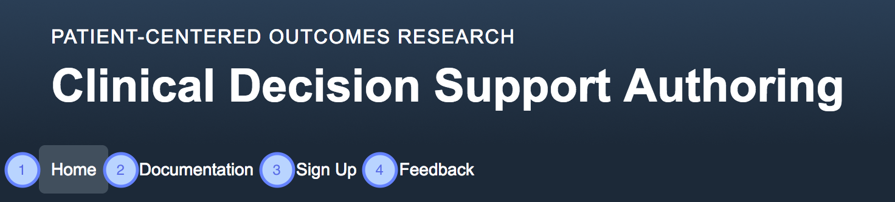

This document helps new users of the Clinical Decision Support Authoring Tool navigate the features of the application and acquire the knowledge of how to use the tool to build CDS artifacts.
1.1 Homepage
The homepage is the first page arrived at when entering the CDS Authoring Tool application and serves as a starting point for the user.
TODO: Add image - will be updated this sprint.
- Main navigation
- A quick link to get started on a new artifact. The user must be logged in to access this page.
- A section explaining the role of the CDS Authoring Tool in the CDS Connect ecosystem, with links to the "Agency for Healthcare Research and Quality" and "CDS Connect Repository" websites.
1.2 Main Navigation
This dark blue bar is present across the top of all pages and allows the user to traverse between different sections of the application.
The options on the navigation bar differ depending on whether a user is logged in to the application.
1.2.1 Unauthenticated User Navigation
TODO: Where should the screenshots live?

- Clicking "Home" will return user to the Homepage.
- Clicking "Documentation" will open the CDS Authoring Tool User Guide. (TODO: Check this is the workflow)
- Clicking "Sign Up" will allow a user to register for an account for the CDS Authoring Tool. (TODO: Check this is the workflow)
- Clicking "Feedback" opens the user's mail application to email questions, concerns, or general feedback to the CDS Authoring Tool creators.
1.2.2 Authenticated User Navigation

- Clicking "Home" returns user to Homepage.
- Clicking "Artifacts" navigates to the Artifacts page. When currently on this page, the background of this tab will be grey.
- Clicking "Workspace" navigates to the Builder page with a new, blank artifact. When currently on this page, the background of this tab will be grey.
- Clicking on "Documentation" opens the CDS Authoring Tool User Guide. (TODO: Check on workflow)
- Clicking "Feedback" opens the user's mail application to email questions, concerns, or general feedback to the CDS Authoring Tool creators. (TODO: May need to change that list or clean it up)
TODO Add main headings for each? 2 vs 2.1
2.1 Artifacts Page

- "New Artifact" form
a. The field to enter the new artifact's name, which is required to create a new artifact.
b. The field to enter the new artifact's version number.
c. Submit button to create the new artifact and add it to the list below.
- Artifacts list
a. Pencil button opens a modal to edit the artifact information (edit modal detailed below).
b. The name of the artifact. This serves as a link, which upon clicking will open the artifact in the Builder page.
c. The version number of the artifact.
d. The date/time the artifact was last updated.
e. Button to delete the artifact entirely.
2.2 Edit Artifact modal
Upon clicking the pencil button, this modal will open allowing the user to edit an existing artifact's name and/or version number.

- The field to edit the artifact's name, which cannot be blank.
- The field to edit the artifact's version number.
- "Save" button to confirm and save changes made to the artifact and close the modal.
- "X" button to cancel changes made to the artifact and close the modal.
3.1 Builder page
The Builder page is the workspace for building artifacts in the CDS Authoring Tool.

- The Builder page header, which contains the name of the artifact currently being worked on and the artifact menu bar (3). This header will be present across all Builder page tabs (4).
- Pencil button opens a modal to edit the artifact name and version. For more details, see section 2.2 Edit Artifact modal.
- The Builder page menu bar, which allows the user to perform actions on the entire artifact.
a. Clicking "Download CQL" will generate the CQL files for the current artifact and will download the result onto their computer inside a zip file. The zip file will contain a fold with the artifact's CQL code, as well as any necessary dependancies. It will also contain the corresponding ELM files for all CQL files.
b. Clicking "Save" will save all changes made to the artifact.
- The Builder page tabs, which divide the Builder page into workflow sections for building an artifact. This helps keep sections of the artifact organized for the user (more on each tab below in sections 3.7-3.12). TODO Check section numbers
3.2 Element Picker
The element picker is used to find and add elements into various sections of the artifact. This same module is used across the "Inclusions", "Exclusions", and "Subpopulations" sections of the application.

- The element search field. Click in this field to open the element dropdown (2). Type in this field to narrow the results in the dropdown by the term typed.
- The element dropdown, which shows relevant elemets filtered by the category selected (4) and the search term (1).
- An individual element which can be added to the artifact. The element name is displayed, and if looking in "All" categories, will be followed by the category type in parenthesis. Clicking on an element will add it to the artifact.
- The category dropdown, which allows the user to select which category of elements they wish to filter results by.
- Clicking "Browse" will launch the "Element Browse" modal.
3.3 Element Browse
Similar to the Element Picker, the Element Browse modal enables the user to have a more spacious area to search, view, and add elements to an artifact.

- The element search field. Type in this field to narrow the results in the element list (3) by the term typed.
- The element category list. Clicking on a category will filter the results in the element list (3) by the selected category. The selected category is highlighted with a grey background.
- The element list is the result of the filtering by category and search term within the modal. Click on an element (name or "+" button) to add it to the artifact and close the modal.
- Clicking "Close" with close the modal without adding any elements to the artifact.
3.4 Elements
Elements are the main building blocks for an artifact. Each artifact represents different conditions, medications, demographics, etc. Using a combinations of elements together in groups (covered below in "Element Groups" (TODO-which section is that?)) helps the user define different populations for the artifact.

- The name of the type of element, in this case the "Diabetes" condition.
- Move this element out of the current group it belongs to. (Outdent)
- Move this element inside a new group. (Indent)
- Clicking this button allows the user to select a saved preset to use for this particular element type.
a. Upon clicking the "Presets" button (4), a dropdown menu will appear to pick the appropriate preset to apply.
- Save the current element configuration as a preset.
- Expand or collapse the current element (helps preseve space and keep workspace tidy).
- Clicking "X" on an element will delete it.
- The name of this specific element which the user can specify in the field.
- The current "Return Type" of this element based on the Expressions (more in section 3.5 Expressions).
- Add an expression to this element (more in section 3.6 Expressions).
Some elements require additional fields to be filled in, or don't support adding Expressions.

- Some elements have more fields to fill in beyond just the "Element Name". This element ("Gender") requires the user to select which gender is desired, using the select menu. Fill out every field in an element to ensure proper CQL code is generated.
- Some elements do not support "Expressions". This element ("Gender") does not have any expressions that can be applied to it, and automatically returns a Boolean value.
3.5 Expressions
Expressions modify an Element to define or narrow its intent. Many Elements will start as a list, which if left as such, will generate invalid CQL. The user must ensure that the Return Type of every Element returns a "Boolean" value. To achieve this, the user can apply Expressions to narrow or filter the previous Expression further. For example, one could start with a list of conditions, then apply the "Most Recent" Expression to find the most recent condition in the list, then apply "Quantity Value" and "Value Comparison" to achieve a Boolean Return Type (pictured below).
Expressions chain onto one another in succession. The Return Type from the first Expression applied will narrow the types of Expressions that can be applied as the second, and so on. The CDS Authoring Tool performs this filtering for the user automatically.

- The list of Expressions applied to the element so far (in this example "Most Recent", "Quantity Value", and a comparison).
- The last Expression that has been applied will appear at the bottom of the Expression list, directly above the "Return Type" label. In this example, the last Expression is a comparison. Note that the comparison Expression has additional fields that need to be filled in. With comparisons, it is acceptable to fill in one or both sides of the comparison.
- The last Expression can be removed by clicking the "X" button on the far right side of the Expression item. Because of the nature of the Expression chaining, only the last most Expression can be deleted. If the user wishes to delete an Expression higher up in the list, they must first delete all the ones below it.
- The "Return Type" of the Element will always be listed at the end of the Expressions list.
- Clicking the "Add Expression" button will reveal a list (to the right of the button) of relevant Expressions that can be applied on the Element.
a. Clicking a revealed Expression button will add that Expression to the Element.
3.6 Logic Elements
Logic Elements are groups of Elements tied together by a particular conjunction, "And" or "Or". By stringing Elements together with conjunctions, a set of logic can be created to define a population.

- The outermost light grey box is the first level ("root", or "main") Logic Element, which houses all other Elements and ties them together with a conjunction (2).
- Between every Element inside a Logic Element group, there will be a dropdown denoting the conjunction used to tie them together. The options for conjunctions are "And" or "Or". Note that within any particular group, the same conjunction must be used. For instance, in the example above, if one changes the first occurance of the conjunction (the first (2) marker) to "Or", the second conjunction will also update to "Or". This avoids creating ambiguous logic for the system to interpret. The user can think of "And" as meaning every Element must be true, while "Or" means at least one of the Elements must be true.
- Every Logic Element will have an Element Picker (Section 3.2) at the bottom to allow the user to add new Elements to the group.
Logic Elements can also be "nested", which is to say, Logic Elements can have other Logic Elements inside them. Logic Elements can be nested as much as the user desires. Using the Indent/Outdent buttons helps the user quickly group and ungroup individual Elements and entire Logic Element groups.

- Once again, the outermost Logic Element here is represented as the light grey box.
- A nested Logic Element, represented by a level of indentation as well as a darker colored grey background.
- Nested Logic Elements can be named using the "Group Name" field, similar to Elements.
- Entire Logic Element groups can be indented or outdented, similar to individual Elements. This helps the user move entire groups, rather than just one Element at a time.
- Again, note that every logic element group will have its own Element Picker, allowing the user to add more Elements or nested Logic Elements to the group.
3.7 Inclusions
The Inclusions section user Elements, Expressions, and Logic Elements to create a target population that is qualified to receive a Recommendation from the Artifact. The Inclusions population, with the Exclusions population filtered out, creates the general population for the Artifact. Every interaction required to build Inclusions is covered in the above sections.
3.8 Exclusions
The Exclusions section uses Elements, Expressions, and Logic Elements to create a target population that is generally excluded from receiving a Recommendation from the Artifact. The population matching Exclusions are filtered out of the Inclusions population, which creates the general population for the Artifact. Every interaction required to build Exclusions is covered in above sections.
3.9 Subpopulations
The Subpopulations section uses Elements, Expressions, and Logic Elements to create named target populations, which can then be applied to a Recommendation. This helps the user further filter the general population created from the combination of Inclusions and Exclusions. There are two default "Subpopulations" that can be applied to a recommendation, "Doesn't Meet Inclusion Criteria" and "Meets Exclusion Criteria" (more in section 3.10 Recommendations). Most interactions required to build Subpopulations are covered in above sections, but Subpopulations has a few differences.
Subpopulations are presented as a list of named populations, which can be expanded or collapsed. The following shows a collapsed Subpopulation.

- In this example, the Subpopulation "CholesterolLessThan100" is collapsed. Clicking the right facing arrows will expand the Subpopulation for editing.
- The "Edit" button is one way to expand the Subpopulation for editing.
- The "X" button is used to delete the Subpopulation.
- "New Subpopulation" will add a new Subpopuation at the bottom of the list, ready for editing.
The following demonstrates an expanded Subpopulation, ready for editing.

- The name of the Subpopulation can be edited when the Subpopulation is expanded.
- Clicking "Done" will save changes to and collapse the Subpopulation.
- The content of a Subpopulation is built the same as Inclusions and Exclusions. It uses items covered in above sections (Elements, Logic Elements, Element Picker, etc).
3.10 Recommendations
Recommendations are the resulting notices that should be delivered to the clinician after the CDS Artifact is executed. Recommendations are written as free text and can have an accompanying Rationale. Most Recommendations will apply to the population that meets Inclusion logic and does not meet Exclusions logic. Subpopulations, either the default options or the subpopulations the user built, can be applied to a Recommendation.

- A blank Recommendation shown as the light grey box.
- The "X" button is used to delete a Recommendation.
- The Recommendation's content is written in free text using this field. This is the message that the clinician will read in the EHR if the Recommendation is triggered.
- Clicking "Add rationale" will append an additional free text field where the user can enter the supporting evidence or reasoning for the Recommendation. This is covered below.
- Recommendations can be further filtered by Subpopulations, which is performed by clicking "Add subpopulation". This will prepend an area above the Recommendation to add Subpopulations, covered below.
- "New recommendation" adds a new Recommendation to the list of Recommendations.
Any Recommendation supports having an optional accompanying Rationale, pictured below.

- A free text field to enter the Rationale for the Recommendation.
Recommendations can be further filtered by Subpopulations to target different Recommendations for different groups within the general target population.

- An applied Subpopulation on this Recommendation. This means this Subpopulation's logic will have to evaluate to true for a given patient in order for the Recommendation to be delivered.
- The "X" button removes the Subpopulation from the Recommendation.
- A field to search for and select the Subpopulations to apply to the Recommendation. Search for Subpopulations by typing here. Click a Subpopulation in the dropdown list below to add it to the Recommendation. Any subpopulation the user created and the two default subpopulations will appear in the dropdown.
- A link to add a new Subpopulation in the Subpopulations tab.
- One of the default Subpopulation options. This default option is supplied to allow the user to add Recommendations for patients who did not meet the Inclusion criteria and thus were not part of the general population for this CDS Artifact.
- One of the default Subpopulation options. This default option is supplied to allow the user to add Recommendations for patients who met the Exclusion criteria and thus were not part of the general population for this CDS Artifact.
3.11 Parameters
Parameters allow the user to create named, reusable Boolean values. They can be used to change the logic in an artifact in different implementations of the artifact. The naming of the Parameter should be readable and communicate its intent within the resulting CQL code. An example of this might be a Parameter called "GradeCRecommendationEnabled". One user might choose to accept this value as true, while another may prefer to set the GradeCRecommendation to false and not execute that part of the CQL code. Parameters are optional additions to the artifact. They can be used in building Inclusions, Exclusions, and Subpopulations, and can be used in Error Handling.

- Each light grey box is an individual Parameter object.
- Parameters should be aptly named using this field.
- The "X" button deletes a Parameter.
- Parameters can have a Boolean value ("True" or "False"), selected by the user with this dropdown.
- The "New parameter" button adds a new Parameter to the list.
3.12 Handle Errors
The "Handle Errors" tab is an area to optionally direct the system how to handle various errors that may be encoutered when running the CDS Artifact. This allows the user to define what error messages to display when certain situations are encountered, such as when data is missing. Error handling is built by chaining together "If" statements, which say "if this condition is met, then deliver this error message."

- Each "If" statement will require a condition, which is selected by the user with this dropdown. Conditions can include Subpopulations and Parameters the user created, as well as a few default options. More below.
- The user can opt to have a second "If" statement tied to the first, meaning both conditions must be met in order to deliver the error.
- This free-text field is used to enter the error message associated with the "If" condition.
- The user can add as many "If" statements to the error handling as desired. Clicking "Or Else If..." will add another "If" statement to the list.
- The final free-text area is used to define the error message that will be displayed if none of the "If" conditions are met.
Similar to Recommendations' Subpopulations, "If" statement conditions for errors support a few default options.

- This default option will be met if none of the user-defined recommendation conditions are met.
- The same as Recommendations' Subpopulations, the "Doesn't Meet Inclusion Criteria" condition will be met for patients who did not meet the Inclusion criteria and thus were not part of the general population for this CDS Artifact.
- The same as Recommendations' Subpopulations, the "Meets Exclusion Criteria" condition will be met for patients who meet the Exclusion criteria and thus were not part of the general population of this CDS Artifact.
- The user-defined Subpopulations and Parameters will be displayed after the three default options.